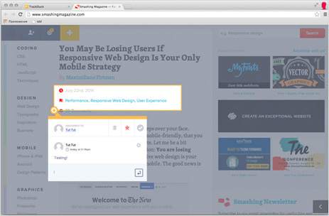
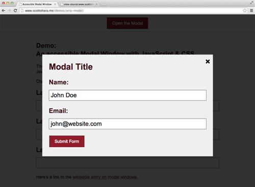

Animating Without jQuery
There’s a false belief in the web development community that CSS animation is the only performant way to animate on the web. This myth has coerced many developers to abandon JavaScript-based animation altogether, thereby (1) forcing themselves to manage complex UI interaction within style sheets, (2) locking themselves out of supporting Internet Explorer 8 and 9, and (3) forgoing the beautiful motion design physics that are possible only with JavaScript.
Essential Visual Feedback Tools For Web Designers
The creative process takes a lot of time, and web designers know it. When you factor in feedback from clients, the process takes even longer: numerous emails, revision notes, chats and meetings — that's what it normally takes to find out precisely what the client wants.
Making Modal Windows Better For Everyone
To you, modal windows might be a blessing of additional screen real estate, providing a way to deliver contextual information, notifications and other actions relevant to the current screen. On the other hand, modals might feel like a hack that you’ve been forced to commit in order to cram extra content on the screen. These are the extreme ends of the spectrum, and users are caught in the middle. Depending on how a user browses the Internet, modal windows can be downright confusing.